Why Renting Farm Machinery is Smarter Than Buying
Eliminate huge capital debts, depreciation losses, and offseason maintenance costs. Pay only for the productive hours you work in your fields.
Zero Capital Investment
Avoid machinery purchase debt and depreciation. Pay only for the productive hours you require in your fields.
No Maintenance Burden
Pre-rental servicing, fluid replacements, and mechanical upkeep are handled by AgroRent before deployment.
Direct Field Delivery
Tractors and attachments are transported directly to your field gate according to your scheduled booking.
In-Field Support
Dedicated technical assistance and prompt troubleshooting support during key sowing and harvest windows.
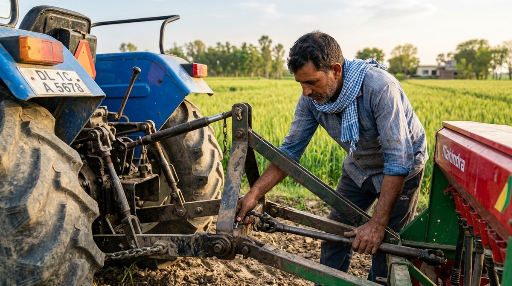
Inspected, Serviced, and Calibrated for Your Soil
Every tractor, rotary tiller, and precision implement is mechanically inspected before dispatch. You receive equipment ready for immediate field operation without downtime or maintenance expenses.
Featured High-Power Tractors
Equipped with modern hydraulics, power steering, and fuel-efficient diesel engines ready for immediate deployment.
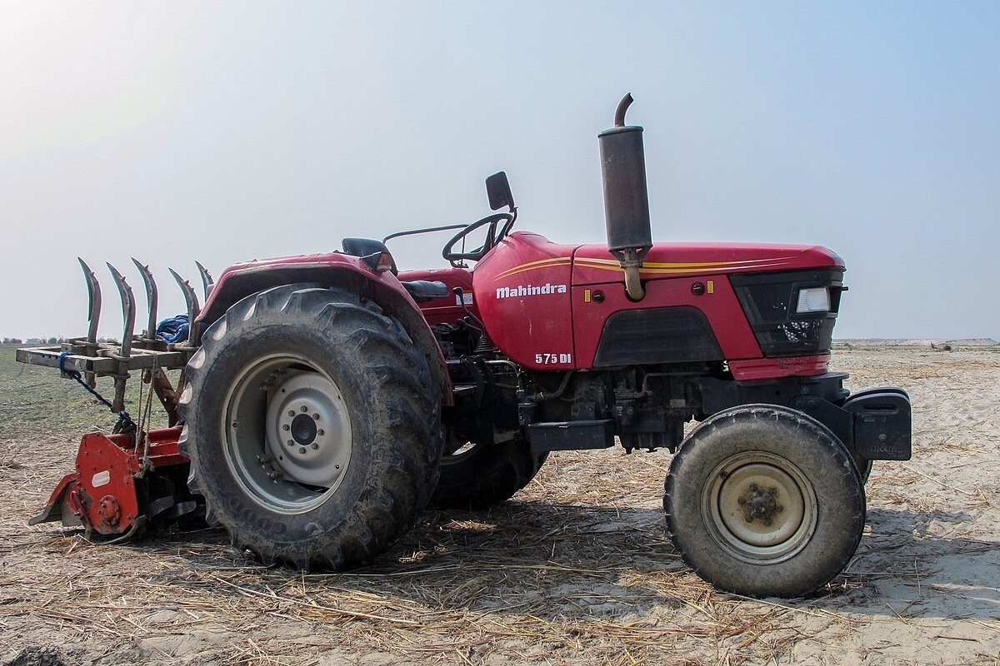
Mahindra 575 DI High-Power Tractor
Workhorse 4-cylinder tractor engineered for heavy ploughing, puddling, and haulage across all soil types.
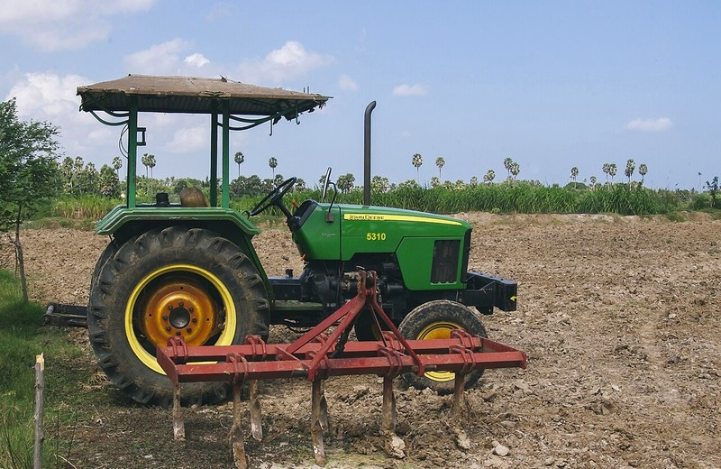
John Deere 5310 PowerTech 4WD
Heavy 4-Wheel Drive traction built for black cotton soil, wet paddy puddling, and laser land levelling.

Sonalika GT 22 Orchard Mini Tractor
Ultra-compact width designed for sugarcane weeding, orchard spraying, and narrow vegetable rows.
Popular Agricultural Equipment
Rent high-efficiency implements separately or bundled with our tractors. Calibrated for maximum seedbed pulverization and clean harvest.
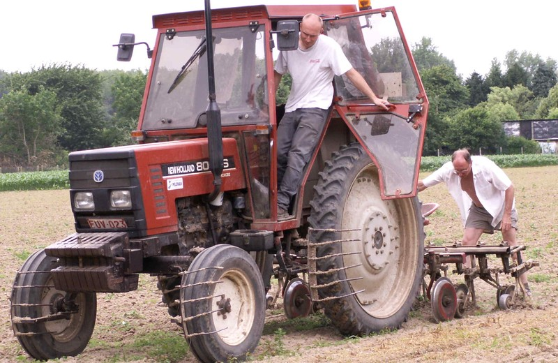
Shaktiman Semi-Champion Rotavator
Boron steel curved blades provide thorough seedbed pulverization and crop residue mixing in a single tractor pass.
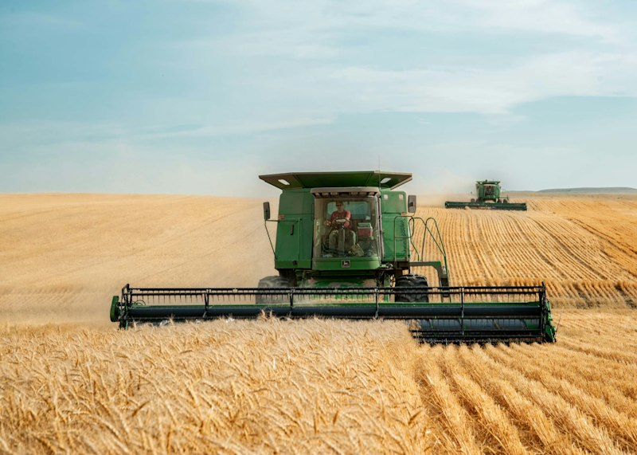
Preet 987 Self-Propelled Harvester
Multi-crop harvesting for paddy, wheat, and mustard with efficient grain harvesting and rapid hydraulic discharge.
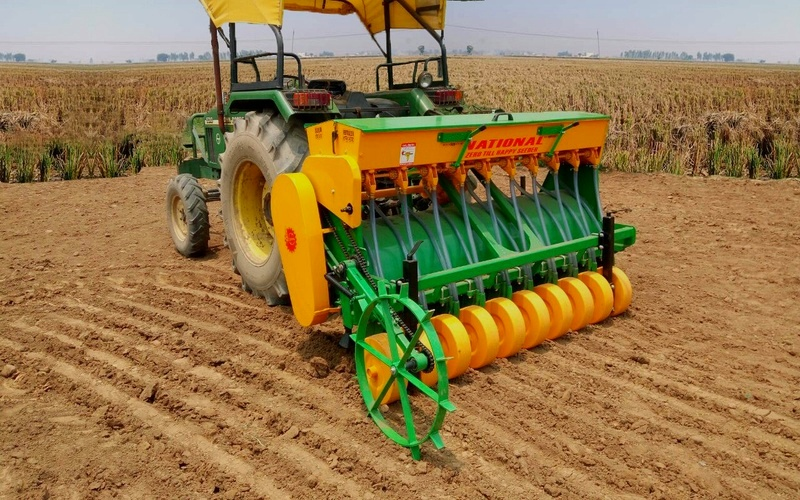
Dasmesh Happy Seeder & Seed Drill
Direct wheat sowing in standing paddy stubble. Dual hopper simultaneously meters seeds and fertilizers uniformly.
How AgroRent Machinery Booking Works
From booking on your smartphone to working in your field in four quick steps.
Select Farm Equipment
Choose from verified tractors, rotavators, seeders, or harvesters based on your crop and acreage needs.
Choose Dates & Duration
Select rental dates by hour, day, or season. Add an optional skilled equipment operator if needed.
Direct Field Delivery
Transport vehicles deliver the inspected machinery directly to your designated field gate location.
Work Your Field & Return
Complete your field operations. The equipment is retrieved after a straightforward post-use check.
Engineered to Power India’s Hardworking Fields
Timing is everything in farming. When the sowing or harvesting window opens, equipment downtime is not an option. AgroRent delivers field-tested machinery, verified pilots, and guaranteed on-time support right to your acres.
Field-Tested & Precision-Serviced
Comprehensive multi-point inspection of hydraulics, blade sharpness, filters, and engine health before every delivery.
Skilled & Verified Field Drivers
Hire experienced operators trained in precision plowing, rotavators, laser levelling, and optimal fuel usage.
Pay-As-You-Farm Fair Pricing
Upfront hourly & daily tariffs with live telemetry tracking, transparent digital receipts, and zero hidden fees.
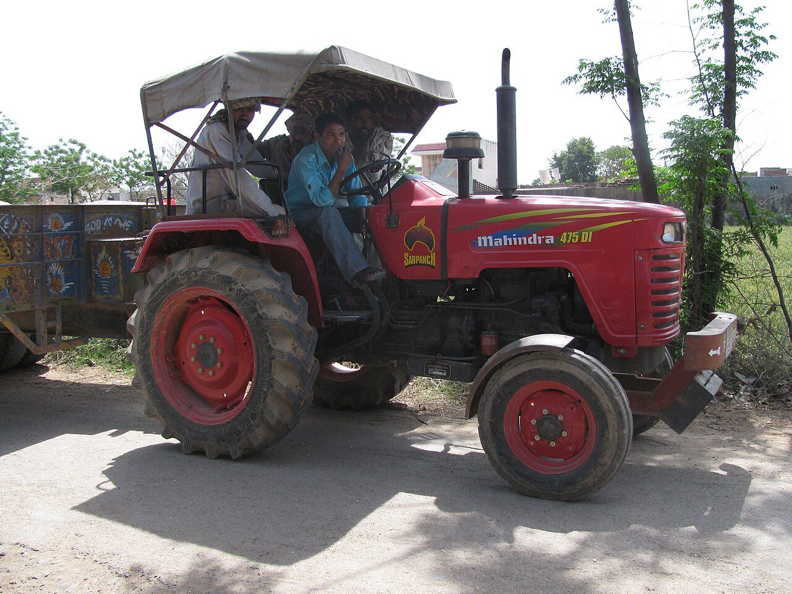
Zero-Downtime Guarantee for Your Critical Farming Windows
Sowing and harvest dates wait for no one. Every AgroRent machine arrives field-ready, backed by emergency mobile mechanic vans and swift replacement commitments.
100-Point Pre-Dispatch Check
Full diagnostic testing on hydraulic lift pressure, 540 RPM PTO splines, diesel filters, and battery health before dispatch to your farm gate.
60-Min Mobile Support Dispatch
Rapid-response mobile service units stationed in rural clusters, equipped with critical hydraulic lines, fan belts, and OEM service parts.
2-Hour Machine Replacement
If an unforeseen mechanical issue cannot be fixed in the field within 2 hours, a standby replacement tractor or implement is dispatched immediately.
GPS Hour-Meter Billing
Automated hour-meter telemetry ensures you only pay for actual machine operation in your acreage, with zero hidden transit or idle engine fees.
Experiences in Agricultural Mechanization
Illustrative feedback reflecting common farmer experiences and operational priorities across cropping seasons.
"During wheat sowing season, timely machinery availability is crucial. AgroRent arranged a 55 HP tractor delivered to my field gate on schedule with an experienced operator."
Sardar Kuldeep Singh
20 Acre Wheat Grower, Ludhiana
"Buying a combine harvester was completely impossible for my family budget. Renting Preet 987 through AgroRent saved our paddy harvest right before heavy rains hit."
Ramesh Patil
Sugarcane & Paddy Farmer, Kolhapur
"The rotavator and laser leveler we rented produced an even, well-pulverized seedbed with good fuel efficiency and uniform crop emergence."
R. Senthil Kumar
Paddy & Pulse Farmer, Thanjavur
Seasonal Machinery Planning Guide
Plan your equipment requirements ahead of major cropping cycles. Implement choices and operational timings vary by regional climate and soil conditions.
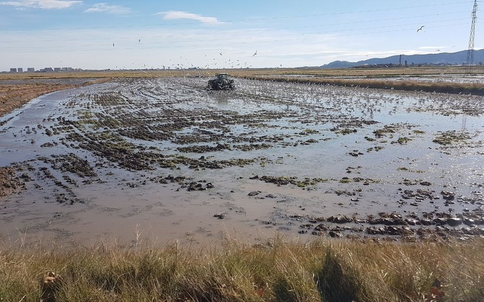
Kharif Cultivation
Paddy, Cotton, Maize, Groundnut
Primary tillage, puddle preparation, and ridge-furrow work suited for monsoon crop establishment.
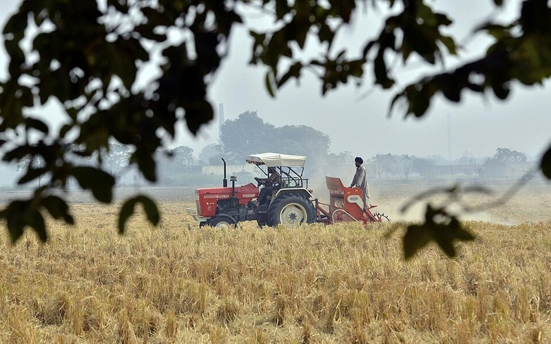
Rabi Sowing
Wheat, Mustard, Chickpea, Barley
Zero-till direct sowing into crop residue, seedbed leveling, and uniform fertilizer distribution.
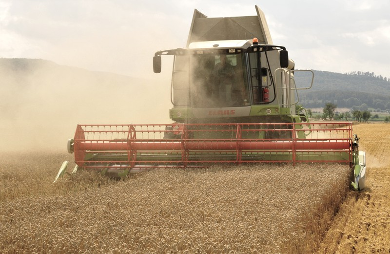
Harvest & Threshing
Paddy, Grain & Straw Management
Timely grain harvesting, threshing, and crop residue collection to safeguard mature crops.
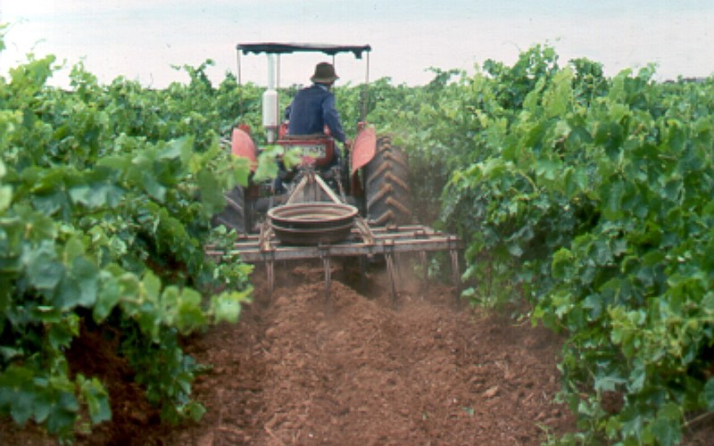
Summer / Zaid Crops
Pulses, Watermelon, Fodder & Orchard
Subsoil compaction relief, inter-row orchard maintenance, and pulse crop establishment.
Recommended Machinery by Crop Type
Every crop demands specific soil pulverization, furrow spacing, and harvesting mechanics. Select pre-calibrated equipment bundles tailored to your farmland.
Paddy & Rice
Clay loam, wet puddling & standing crop harvesting
- 4WD Puddling Tractor: High traction, no wheel slip
- Laser Land Leveler: 30% irrigation water savings
- Track Combine Harvester: Bog-free paddy harvesting
Wheat & Cereals
Fine seedbed preparation, stubble sowing & grain harvest
- Happy Seeder: Direct sowing into heavy rice stubble
- Reversible MB Plough: Complete deep soil inversion
- Multi-Crop Thresher: Clean grain output & straw reaper
Sugarcane & Cotton
Wide-row tilling, earthing up & high-tonnage haulage
- Narrow-Chassis Mini Tractor: Weeding between 4ft rows
- Ratoon Manager: Root pruning & fertilizer banding
- Hydraulic Cane Trailer: Fast mill offloading
Fruits & Vegetables
Low clearance canopy cultivation & mist spraying
- Compact 22 HP Tractor: Low height under tree branches
- Air-Blast Mist Sprayer: 360-degree canopy penetration
- Bed Former & Mulcher: High-yield raised beds
AgroRent Regional Hubs & Service Areas
Connecting farmers across major agricultural belts with local machinery dispatch points. Delivery availability and transit times depend on location and seasonal demand.
Punjab & Haryana
Wheat & Rice Grain BowlPrimary Hubs: Ludhiana, Sangrur, Bhatinda, Karnal, Hisar, Sirsa
Machinery Available: High-Power 4WD Tractors, Super Seeders, Track Harvesters
Delivery availability depends on location
UP & Bihar Plains
Sugarcane & Multi-CropPrimary Hubs: Meerut, Bareilly, Agra, Varanasi, Patna, Muzaffarpur
Machinery Available: Multipurpose Tractors, Subsoilers, Heavy Tipping Trolleys
Delivery availability depends on location
MP & Rajasthan
Soybean, Mustard & PulsesPrimary Hubs: Indore, Ujjain, Bhopal, Kota, Sri Ganganagar
Machinery Available: Reversible Ploughs, Disc Harrows, Laser Land Levelers
Delivery availability depends on location
South India
Tamil Nadu, AP, Telangana & KAPrimary Hubs: Coimbatore, Thanjavur, Madurai, Erode, Kurnool, Mandya
Machinery Available: Wetland Puddlers, Mini Orchard Tractors, Boom Sprayers
Delivery availability depends on location
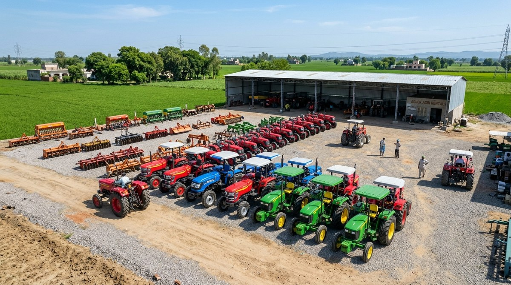
Direct Farm Gate Transport
Tractors and heavy attachments are dispatched from district depots using dedicated carriers directly to your village access point, preserving tractor tyre life and minimizing transit fuel.
Frequently Asked Questions
Everything you need to know about renting high-performance farm tractors and equipment with AgroRent.
How are machinery rental rates calculated (Hourly vs Daily)?
We offer two transparent pricing formats: Hourly rentals (minimum 3 hours) for quick operations like spraying or rotavating, and Daily rentals (8 to 10 working hours) for comprehensive field operations. If you require multi-day or seasonal acreage packages, discounted bulk tariffs apply automatically.
Is an operator/driver included, and who handles diesel fuel?
You can choose whether you want a certified agricultural operator or self-drive (available for verified farmers with a valid commercial tractor driving license). For fuel, you can either provide your own diesel or opt for our "Fuel Included" package where billing is calculated based on exact engine hours logged.
How does farm delivery and equipment return work?
Machinery is delivered to your designated farm access point based on confirmed booking schedule and location. After completing your rental period, our logistics team inspects and collects the equipment, and any refundable security deposit is processed back promptly.
What happens if machinery experiences a mechanical issue in the field?
All equipment undergoes pre-dispatch inspection. If mechanical difficulty occurs during your rental, our service team provides troubleshooting support or arranges repair assistance and replacement options depending on location and availability.
What documents are required to rent equipment?
Renting with AgroRent is paperless and fast. You only need an Aadhaar card / Government photo ID and a valid mobile number for OTP verification. Land holding records (Khasra/Khatauni) are optional and qualify you for zero-deposit institutional credit lines.
Have a custom farm equipment requirement or questions?
Our farmer support desk is available Monday through Sunday for machinery booking assistance.
Talk to a Farm Machinery SpecialistReady to Mechanize Your Farm for the Upcoming Season?
Book verified tractors, rotary tillers, seed drills, and harvesters directly from your smartphone. Enjoy transparent rates, certified operators, and scheduled farm gate delivery.